+ 56 9 98234567
Rescate y adopción de perros callejeros

Rescatamos perros en situación de peligro y/o abandono. Los rehabilitamos y los preparamos para buscar hogar

Rescatamos perros en situación de peligro y/o abandono. Los rehabilitamos y los preparamos para buscar hogar